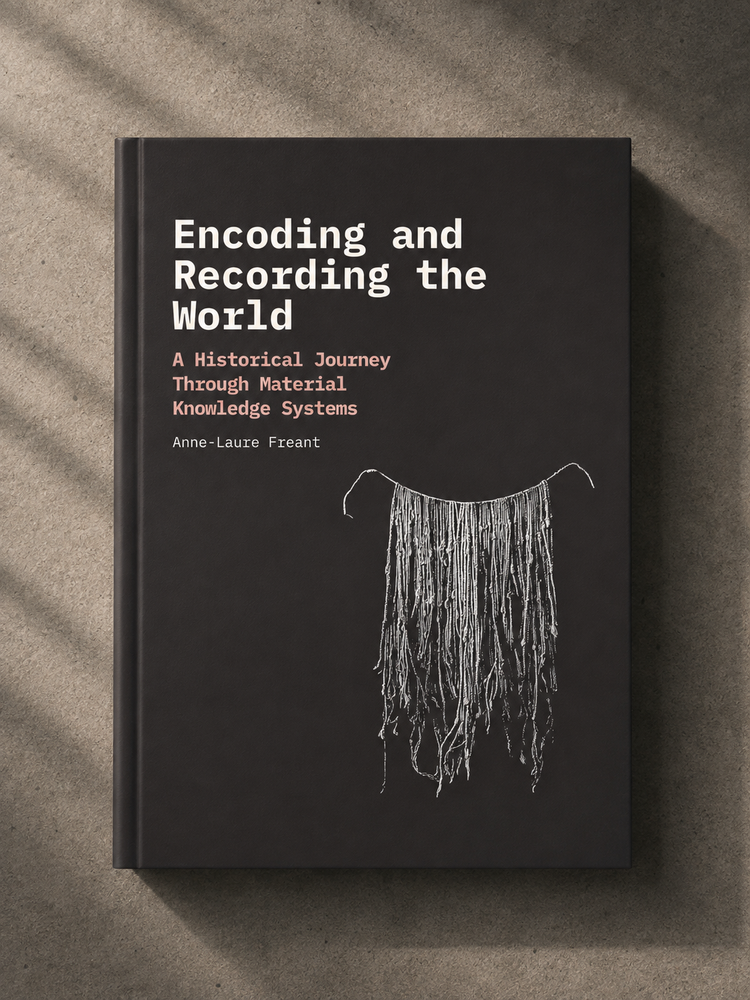

Encoding and Recording the World
A Historical Journey Through Material Knowledge Systems
Anne-Laure Freant
Across cultures and eras, humans have developed material systems for organizing knowledge long before the emergence of digital technologies.
Through a combination of historical research and contemporary artistic and design references, the book investigates how humans have repeatedly developed physical forms for encoding, recording, and transmitting knowledge across cultures and eras.
Bringing together artefacts traditionally studied across archaeology, anthropology, media history, cartography, scientific instrumentation, and contemporary design, Encoding and Recording the World approaches these objects as part of a broader material culture of information. Conceived as part of the ongoing Datartefact editorial and curatorial research project, the book contributes to a broader investigation into the material culture of information, scientific modelling, visualization practices, and contemporary forms of data physicalization.
This book is currently in the making. Subscribe for updates,
research notes, and to be notified upon publication.